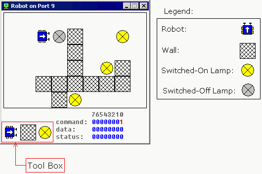

Robot - port 9 (3 bytes)

The robot is controlled by sending data to i/o port 9.
The first byte (port 9) is a command register. set values to
this port to make robot do something. supported values:
| decimal value | binary value | action |
| 0 | 00000000 | do nothing. |
1 | 00000001 | move forward. |
| 2 | 00000010 | turn left. |
| 3 | 00000011 | turn right. |
| 4 | 00000100 | examine.
examines an object in front using sensor. when robot completes the task,
result is set to data register and bit #0 of status register
is set to 1. |
| 5 | 00000101 | switch on a lamp. |
| 6 | 00000110 | switch off a lamp. |
The second byte (port 10) is a data register. this register
is set after robot completes the examine command:
| decimal value | binary value | meaning |
| 255 | 11111111 | wall |
| 0 | 00000000 | nothing |
| 7 | 00000111 | switched-on lamp |
| 8 | 00001000 | switched-off lamp |
The third byte (port 11) is a status register. read values from
this port to determine the state of the robot. each bit has
a specific property:
| bit number | description |
| bit #0 | zero when there is no new data in data register,
one when there is new data in data register. |
| bit #1 | zero when robot is ready for next command,
one when robot is busy doing some task. |
| bit #2 | zero when there is no error on last command execution,
one when there is an error on command execution (when robot cannot
complete the task: move, turn, examine, switch on/off lamp). |
example:
MOV AL, 1 ; move forward.
OUT 9, AL ;
MOV AL, 3 ; turn right.
OUT 9, AL ;
MOV AL, 1 ; move forward.
OUT 9, AL ;
MOV AL, 2 ; turn left.
OUT 9, AL ;
MOV AL, 1 ; move forward.
OUT 9, AL ;
keep in mind that robot is a
mechanical creature and it takes
some time for it to complete
a task. you should always check bit#1 of status register
before sending data to port 9, otherwise
the robot will reject your command and "busy!" will be
shown. see robot.asm in c:\emu8086\examples.
Creating Custom Robo-World Map
It is possible to change the default map for the robot using the tool box.
if you click the robot button and place robot over existing robot it
will turn 90 degrees counter-clock-wise. to manually move the robot
just place it anywhere else on the map.
If you click lamp button and click switched-on lamp
the lamp will be switched-off, if lamp is
already switched-off it will be deleted.
click over empty space will create a new switched-on lamp.
Placing wall over existing wall deletes the wall.
Current version is limited to a single robot only. if you forget to place
a robot on the map it will be placed in some random coordinates.
When robot device is closed the map is automatically saved inside this file: c:\emu8086\devices\robot_map.dat
It is possible to have several maps by renaming and coping this file before starting the robot device.
The right-click over the map brings up a popup menu that allows to switch-on or switch-off all the lamps at once.